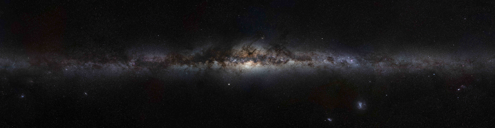

Our Galaxy in Gravitational Waves
The Laser Interferometer Space Antenna (LISA) is a joint ESA-NASA mission with a planned launch date in 2035. It will explore the rich mHz gravitational wave band between high-frequency terrestrial gravitational-wave observatories like LIGO, Virgo, and KAGRA and low-frequency pulsar timing arrays. Among other phenomena, LISA will observe gravitational waves from every mHz compact binary system in the Milky Way, some 10,000 as individual sources and the remaining tens of millions as an overlapping astrophysical confusion noise known as the Galactic foreground.
Together, these signals have the potential to open a new window on our Galaxy, providing novel insights into topics ranging from Galactic morphology to low-mass stellar evolution. I lead a broad program of research developing methods to infer these astrophysics from LISA data, including analyses of the Galactic foreground anisotropy, frameworks for population-level inference of Galactic binaries, and exploration of gravitational-wave contributions from Galactic binary subpopulations. This latter category includes student work by Levi Schult (Vanderbilt; cataclysmic variables in the Galactic foreground), Solano Sousa Felicio (Observatoire de la Côte d'Azur; separation of the Galactic bulge and disk), and Steven Rieck (now a PhD student at University of Cincinnati; background gravitational-wave contributions from the Large Magellanic Cloud)
The Population of Supermassive Black Hole Binaries
Pulsar timing arrays (PTAs) explore low-frequency gravitational-wave signals in the nHz, and recently announced the discovery of evidence for a nHz gravitational-wave background. The likely (although not guaranteed) origin of this background is the population of supermassive black hole binaries, providing a unique view on supermassive black hole binaries with sub-pc separations. I am a member of the North American Nanohertz Observatory for Gravitational Waves (NANOGrav) and the International Pulsar Timing Array (IPTA) and currently working on inferring the properties of this population from the upcoming NANOGrav 20-year dataset and IPTA Data Release 3. I am also beginning to explore what can be accomplished via population-level analyses of dual active galactic nuclei —an electromagnetic view on close supermassive black hole binaries — with data from the Vera Rubin Legacy Survey of Space and Time.
The UV Frontier
The UltraViolet EXplorer (UVEX) is a NASA mid-tier explorer class mission slated for launch in 2030. I have been involved since early on in the mission proposal process, working with the multimessenger follow-up group to develop the UVEX follow-up strategy for binary neutron star and neutron star black hole mergers detected in gravitational waves. This work is featured in the first short-author publications on UVEX, including work by my student Sydney Leggio (now a PhD student at University of South California).